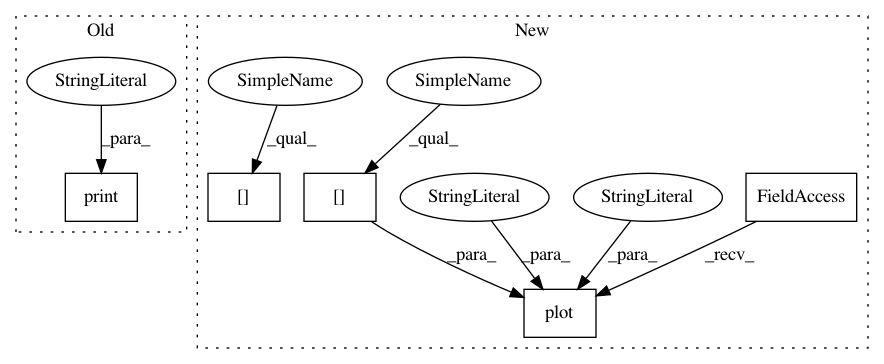

f9deab98c68d4bbbc92313d9cf01ecd5d89eceec,examples/plot_kmeans_poincare_disk.py,,main,#,20
Before Change
// color="red",
// point_type=manifold.point_type)
print("Data_labels",)
plt.show()
After Change
labels = kmeans.predict(X=merged_clusters)
visualization.plot(
merged_clusters[labels==0],
ax=ax,
space="H2_poincare_disk",
marker=".",
color="red",
point_type=manifold.point_type)
visualization.plot(
merged_clusters[labels==1],
ax=ax,
space="H2_poincare_disk",
marker=".",
In pattern: SUPERPATTERN
Frequency: 3
Non-data size: 5
Instances
Project Name: geomstats/geomstats
Commit Name: f9deab98c68d4bbbc92313d9cf01ecd5d89eceec
Time: 2020-01-23
Author: hadizaatiti@gmail.com
File Name: examples/plot_kmeans_poincare_disk.py
Class Name:
Method Name: main
Project Name: geomstats/geomstats
Commit Name: f9deab98c68d4bbbc92313d9cf01ecd5d89eceec
Time: 2020-01-23
Author: hadizaatiti@gmail.com
File Name: examples/plot_kmeans_poincare_disk.py
Class Name:
Method Name: main
Project Name: rtavenar/tslearn
Commit Name: 495d64386cb00b6be050475bbff545e0a0115e94
Time: 2020-03-27
Author: johann.faouzi@gmail.com
File Name: tslearn/docs/examples/plot_lb_keogh.py
Class Name:
Method Name:
Project Name: geomstats/geomstats
Commit Name: 418112c64bde99cb342140fc0e5769a22969773e
Time: 2020-01-23
Author: hadizaatiti@gmail.com
File Name: examples/plot_kmeans_poincare_disk.py
Class Name:
Method Name: main